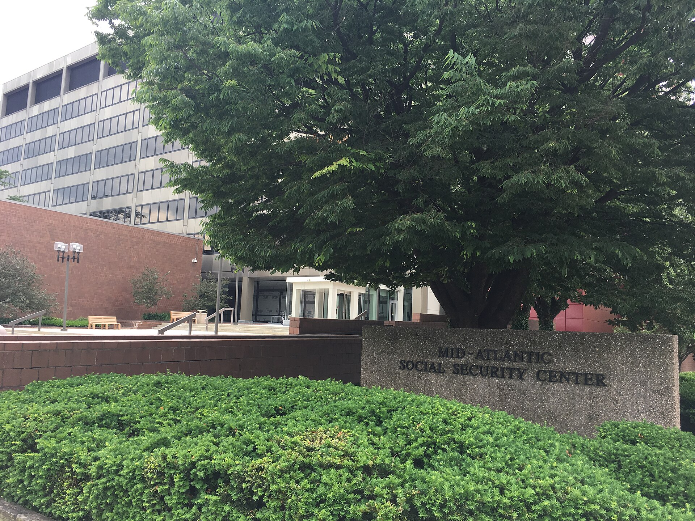

AQSh pensiya tizimi: Social Security, 401(k) va IRA asoslari
AQSh pensiya tizimi uchta ustunga tayanadi: davlat ijtimoiy sugʻurtasi (Social Security), ish beruvchi rejalari (401(k)) va shaxsiy jamgʻarma (IRA). Social Security nafaqasiga huquq qanday paydo boʻladi (40 kredit ≈ 10 yil; 2026-yilda 1 kredit = 1 890 dollar, yiliga eng koʻpi 4 kredit); toʻliq nafaqa yoshi (1960-yildan keyin tugʻilganlar uchun 67), erta (62) va kechiktirilgan (70 gacha) daʼvo; FICA soligʻi (6,2% + 6,2%); muhojirlar uchun shartlar va totalizatsiya kelishuvlari; 401(k) va IRA ning 2026-yilgi cheklovlari. AQSh Ijtimoiy sugʻurta boshqarmasi (SSA) va Soliq xizmati (IRS) rasmiy maʼlumotlariga asoslangan.

AQShda pensiya taʼminoti odatda uchta ustunga tayanadi: 1) davlat ijtimoiy sugʻurtasi — Social Security (SSA); 2) ish beruvchi orqali jamgʻarma rejasi — 401(k); 3) shaxsiy nafaqa hisobi — IRA. Quyida har biri faktlar bilan, AQSh Ijtimoiy sugʻurta boshqarmasi (SSA) va Ichki daromadlar xizmati (IRS) rasmiy maʼlumotlari asosida tushuntiriladi. Dollar raqamlari — 2026-yilga tegishli (aksincha koʻrsatilmagan boʻlsa).
Social Security nafaqasiga huquq
SSA maʼlumotiga koʻra, koʻpchilik uchun pensiya nafaqasiga huquq olish uchun 40 kredit (taxminan 10 yillik ish) kerak. 2026-yilda har 1 890 dollar hisobga olinadigan daromad uchun 1 kredit beriladi; yiliga 7 560 dollar ishlab topilganda oʻsha yilning barcha 4 krediti toʻplanadi. Yiliga eng koʻpi 4 kredit olish mumkin — yaʼni kreditlar ish yillari davomida jamlanadi.
Nafaqa yoshi: 62, 67 va 70
1960-yil yoki undan keyin tugʻilganlar uchun toʻliq nafaqa yoshi (Full Retirement Age) — 67. Nafaqani eng erta 62 yoshda boshlash mumkin, ammo bunda summa umrbod kamaytiriladi. Aksincha, toʻliq nafaqa yoshidan keyin daʼvoni kechiktirsangiz, nafaqa 70 yoshgacha oshib boradi: toʻliq yoshi 67 boʻlganlar uchun 70 yoshda daʼvo qilish toʻliq nafaqaning 124 foizini beradi. 70 yoshdan keyin nafaqa boshqa oshmaydi.
FICA soligʻi va daromad chegarasi
Social Security ish haqidan olinadigan FICA soligʻi bilan moliyalanadi: ishchi 6,2% va ish beruvchi 6,2% (jami 12,4%) ijtimoiy sugʻurta (OASDI) uchun toʻlaydi, bu esa soliq soladigan daromad chegarasigacha amal qiladi. 2026-yilda bu chegara (taxable wage base) 184 500 dollar (2025-yildagi 176 100 dollardan oshgan). Medicare uchun esa alohida 1,45% (ishchi va ish beruvchidan) barcha daromaddan, chegarasiz olinadi.
Muhojirlar uchun shartlar
Qonuniy maqomdagi, ishlashga ruxsati va amal qiluvchi SSN si boʻlgan hamda kredit talabini (odatda 40 kredit) bajargan chet el fuqarolari Social Security pensiyasiga huquqli boʻladi. 2004-yil 1-yanvardan buyon daromadning nafaqaga hisoblanishi uchun ishchi qonuniy ishlashga ruxsatli boʻlishi shart. AQSh baʼzi davlatlar bilan totalizatsiya kelishuvlariga ega — ular AQSh va chet eldagi ish kreditlarini birlashtirib (totalizatsiya) mutanosib nafaqa olish va ikki tomonlama soliqdan qochish imkonini beradi. 2025-yil 5-yanvarda imzolangan Social Security Fairness Act “Windfall Elimination Provision” (WEP) va “Government Pension Offset” (GPO) qoidalarini bekor qildi — bu chet el yoki qamrab olinmagan pensiyaga ega baʼzi kishilar nafaqasini oshirdi.
401(k) — ish beruvchi rejasi
401(k) — ish beruvchi taklif qiladigan jamgʻarma reja; badallar soliqdan oldin (pre-tax) yoki Roth (soliqdan keyin) shaklida boʻlishi mumkin va koʻpincha ish beruvchi qoʻshimcha badal (match) qoʻshadi. IRS maʼlumotiga koʻra, 2026-yilda xodimning shaxsiy badali chegarasi 24 500 dollar (2025-yildagi 23 500 dollardan oshgan). 50 yosh va undan katta xodimlar uchun qoʻshimcha (“catch-up”) badal 8 000 dollar (jami 32 500 dollar). SECURE 2.0 qonuniga koʻra, 60–63 yoshdagilar uchun kuchaytirilgan qoʻshimcha badal 11 250 dollar (jami 35 750 dollar).
IRA — shaxsiy nafaqa hisobi
IRA (individual pensiya hisobi) — ish beruvchidan mustaqil, oʻzingiz ochadigan hisob. Ikki asosiy turi bor: Traditional (odatda soliqdan oldin) va Roth (soliqdan keyin). IRS maʼlumotiga koʻra, 2026-yilda badal chegarasi 7 500 dollar (2025-yildagi 7 000 dollardan oshgan), 50 yoshdan oshganlar uchun qoʻshimcha 1 100 dollar. Roth IRA da daromad chegaralari bor: 2026-yilda badal huquqi yolgʻiz shaxslar uchun 153 000–168 000 dollar, birgalikda ariza beruvchi turmush qurganlar uchun 242 000–252 000 dollar oraligʻida bosqichma-bosqich kamayadi.
Uchta ustunni birga koʻrish
Umumiy manzara: Social Security — davlat kafolatlagan asosiy nafaqa; 401(k) — ish beruvchi orqali, koʻpincha match bilan jamgʻarma; IRA — shaxsiy qoʻshimcha jamgʻarma. Bu uch ustun bir-birini toʻldiradi; aniq raqamlar va huquqlar SSA (ssa.gov) va IRS (irs.gov) rasmiy sahifalarida har yili yangilanadi.